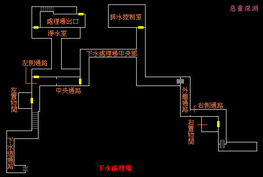
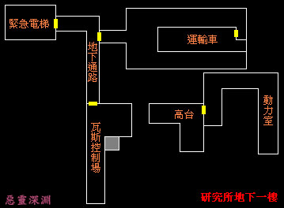
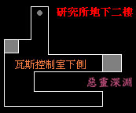
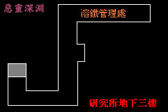
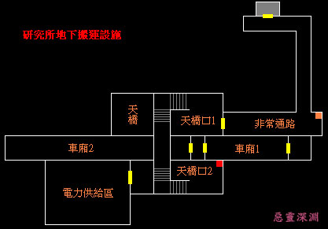

|
惡靈古堡２-----�堙ELeon攻略流程
|
以下的攻略可以取得所有的File，標綠色的道具是重要道具，一定要取。
| 遊戲開始後，沿路來到置物小屋外的管理室，桌上有小屋鑰匙。 |

| 進入置物小屋，桌上有手槍子彈、色帶。經室外廣場的樓梯上到二樓停機坪，欣賞一段動畫。 |

|
從東側迴廊往逃生梯，逃生梯間有三株綠色藥草，由一樓門出去後到達一樓東側辦公室，逃生梯門前 的屍體身上有手槍子彈。 在東側辦公室內的木架上取得活門旋柄，照原路走回停機坪旁的小隔間使用，將火澆熄。 離開停機坪回東側迴廊，會看見一段動畫，和 T-002 決戰於東側迴廊，迴廊中間的屍體身上有手槍子 彈，T-002身上也能取得手槍子彈。 進入美術室，在雕像旁找到藍色磁卡，另外可以找到散彈。 接待室裡有色帶、局長秘書的日記Ａ、手槍子彈、小鑰匙，到手後在大廳 2F 迴廊底部找到獨角獸徽 章，將迴廊中央的逃生梯放下並下至一樓。 在一樓大廳女神像前使用獨角獸徽章，得到黑桃鑰匙，櫃檯有硫彈槍、色帶，在電腦使用藍色磁卡， 解除門鎖。 門鎖解除後服務處就可以進去了，服務處長椅上有署內回覽，角落小櫃子的抽屜可用小鑰匙打開，可 以拿到散彈。 經西側通路到檔案資料庫，進門右轉到底的文件櫃上有巡邏報告書，左手邊的櫃子有色帶，櫃子上面 有急救噴霧。出來的走廊上有綠色藥草。 到作戰會議室（小心有兩隻僵屍跳出），桌上有作戰報告書１、手槍子彈，在最內側壁爐使用打火機 得到紅寶石。 經暗房前通路（有綠色藥草），到二樓石像的迴廊推動石像使他們面對面，得到紅寶石。 進入 S.T.A.R.T. 辦公室Chris的日記，最左邊的桌連按五十次得底片Ｄ，左側第二個桌上有手槍子彈 ， 鐵櫃裡有沙漠之鷹。 出辦公室至 2F 大廳，遇見Sherry，她逃跑時遺留下方塊鑰匙，就在她爬出去的洞口附近，長廊底端架 上有散彈，出來時又遇Claire ，門前的小桌如有小鑰匙（在2F接待室）可開啟抽屜得 到手槍用組件， 與H&K vp70 組合。 由 2F 大廳到圖書室，此時 1F 的西側通路電線失靈闖入大批僵屍（依表關使用電線的地方，沒被使用 的走廊就會發生此事件），上樓梯到底後跌落，將一旁電源打開，再把左邊兩個書櫃都像右移一格， 小隔間裡的機關就會打開，取得主教插栓。 帶著兩顆紅寶石回到 2F 的美術室，在兩座石像使用可在中央石像取得國王插栓。 到一樓的偵訊室Ａ，櫃上取得城堡插栓，桌上有急救噴霧（小心利卡襲擊），偵訊室Ｂ有手槍子彈。 帶著方塊鑰匙開啟 1F 置物間，在裡面的櫃子找找，可以找到底片Ｂ，此時先前往暗房，將所有底片 沖洗出來，同時暗房桌上有色帶、作戰報告書２。 前往西側辦公室，門旁有綠色藥草，桌上有手槍子彈，靠近門的桌上有給Leon的備忘錄，旁邊桌上 閃閃發亮的是小鑰匙，最重要的是隔間桌上的紅心鑰匙。 |

|
經 1F 的休息室前通路往地下一樓，在地下停車場碰上Ada，需要幫她推車，角落有綠色藥草。 經西側通路到拘留所，在裡面和記者Ben碰面，劇情結束後在旁邊的櫃子取得鐵鍬，牢房裡有藍、綠 藥草。 前往犬舍，聽到可怕的犬吠聲，如果不拿取紅色藥草，牠們是不會跑出來的，牠們的牢籠裡有藍色草 ，在地圖上標示黑點的地方使用鐵鍬，然後下去下水道通路。 |

|
左置物間有藍色藥草、色帶，之後進入淨水室，可以先把三個插栓插在裡頭門邊的機關上，接著回到 左側通路，再碰Ada，幫忙Ada過去中央通路後，角色切換成Ada。 到下水處理場中央部，外牆通路有散彈，進入排水控制室，牆上有下水處理場地圖，將箱子排列好後 放水通過，在櫃子上取得梅花鑰匙後，回到一開始的地方，角色切換成Leon。 （可以不去）回到地下一樓電力供應室取得綠色藥草、地下室地圖，調整電力供應 的機器，正確的 調法是「 上 . 上 . 下 . 上 . 下」（順序可換）。 （可以不去）進入停屍間，在裡側鐵櫃取得紅色磁卡鑰匙，在武器庫使用紅色磁卡鑰匙，裡面有沙漠 之鷹子彈、手槍子彈，衝鋒槍、腰包二選一（表關選走的就不會出現）。 離開地下一樓，進入值班休息室，裡面有喬治的日記、散彈、沙漠之鷹子彈。 帶著打火機與梅花鑰匙前往視聽室，先將火爐點燃，依12皇后、 13國王、 11傑克的順序打開，金色 齒輪就會掉下，去將齒輪拾起，在這之前 T-002 再度來襲，勝利後在他身上有手槍子彈。離開時在ㄇ 字通路會再次碰上 T-002 ，擊敗後可拿到散彈。 前往 2F 署長個人收藏室，辦公椅上有局長的筆記，在最裡側的箱子取得四角手搖把，附近桌上有局 長秘書的日記Ｂ，在回程會碰到 T-002 ，打倒後可得到沙漠之鷹子彈。 |

|
經 2F 圖書室的階梯到 3F ，在機關室牆上使用四角手搖把，在齒輪處使用金色齒輪後按下按鈕，從打 開的門取得騎士插栓，然後直接由門滑下去，到達地下一樓西側通路。在聽到一聲慘叫後前往拘留所 見 Ben 最後一面，從 Ben 手上接過給局長的信件複本，不久Ada也到了（可是又離開了），然後接到 Claire的通知，前往地下一樓的淨水室。 進入淨水室，要與 G-1 對決，勝利後在機關上裝上四個插栓，前往處理場出口，在處理場出口Ada歸 隊，兩人一起行動。 |

|
兩人來到下水道（有兩株藍色藥草）的倉庫Ａ， 裡面有手槍子彈、色帶、給下水道管理人的傳真，並 且從置物箱中取出活門旋柄。 在Ｔ字通路發生劇情，角色切換成Ada，通路牆上有地圖，之後在東側下水道三角形黑點處的樓梯 （見地圖）上去，上面有大蟑螂，要快速通過，下來後發生劇情，結束後由底端的樓梯下去，角色切 換回Leon。 到東側下水道下方的屍體堆可找到狼之硬幣、小鑰匙，經對外通路到機關室， 在圓孔處使用活門旋柄 讓鐵橋降下，到達對面後再次使用活門旋柄讓鐵橋回升，旁邊有散彈、綠色藥草兩株。 在垃圾搬運道，如果表關是使用高壓器瓶擊敗大鱷魚則不會有事，如果是使用武器打死，則需再次與 大鱷魚戰鬥（可以使用高壓器瓶）。 在垃圾處理場Ada歸隊，附近有色帶，取得後由樓梯上去到達控制室（地圖省略），在控制室的左邊 盡頭有鷲之硬幣、下水道管理 人日報，之後由右邊盡頭圓孔處使用活門旋柄後由樓梯上去。 下樓梯到達東側下水道，再到對外通路，在瀑布旁的機關使用豺狼徽章、大鷲徽章，經吊橋到纜車接 駁場，打開右側的電源，進入纜車中，此時會碰上 G-2 的巨爪，只要看車頂落下的砂塵可以判斷他的 行蹤，用手槍輕鬆把他打敗吧！ |

|
出列車後到達工廠的纜車接駁場，地圖左上角地面有武器櫃鑰匙（可以不拿），而這裡的信號彈可用 打火機點燃，但僅是讓玩家知道武器櫃鑰匙的的位置。西側通路的死路底部屍體可取得散彈槍組件， 東側通路死路底部可取得藍色、綠色藥草。 副控室裡面有急救噴霧、色帶、散彈、沙漠之鷹子彈，Ada暫時留下。 操車廠牆上有地圖，鐵架上有手槍子彈，從邊緣的升降梯下去，順著路一直走到底部，到達一處有許 多監視畫面的地方，桌上有工廠鑰匙，打開監視器，看到 T-002 正朝自己走來（沒開監視器他也會來 ），打敗他後可在他身上找到散彈。回到副控室。 在副控室角落的機器上使用工廠鑰匙，運輸車即會出現在操車廠上，帶妥足夠的武器，前去打運輸車 前的開關，坐上運輸車，車內有軍用手槍子彈。 G-3 的巨掌出現，將Ada擊傷，出運輸車與之戰鬥，勝利後回車廂，運輸車到達研究所地下一樓停 止。 |

|
出運輸車後由周圍一處通風口爬進去，落下後到達地下通路，此時運輸車突然繼續下降。 前往瓦斯控制場，裡端有綠色藥草，接著將鐵箱推上電梯後將電梯啟動往下到達地下二樓。 |

|
將鐵箱推出電梯，一直推到地圖上標示紅點的地方，附近屍體身上有關於P-ε瓦斯之追蹤調查報告，底 端有色帶、散彈。 |

|
從地下二樓的右側電梯搭乘到地下三樓的溶鐵管理處，在通道盡頭打開研究所電源開關。 由原路回到地下一樓，進入緊急電梯，電梯裡有兩處開關，其中一處還無法使用，打開門旁的開關， 下到研究所地下四樓。 |

|
由主電梯出來，前往低溫實驗室，在低溫實驗室的架上有急救噴霧，再往裡側一點有保險絲盒，將 保險絲盒拿到右邊的機器上製成主保險絲。 將主保險絲拿到動力傳導棒使用，讓研究所電力恢復。 前往宿舍，裡面有藍色藥草盆，長椅上有臨時使用者登陸方法，電腦前有研究設施保安手冊，鐵櫃裡 有火炎放射器，桌上有研究室磁卡（可以不拿）。 （可以不去）宿舍裡頭的藤蔓植物如果在表關已經解決�媄鶼N不會出現，如果還沒解決，可以用打火 機或火炎彈攻擊，接著由此處爬到休息室，休息室鐵櫃裡有散彈兩組，電腦前有色帶。經Ｂ通道到樓 梯，往下到達研究所地下五樓陽台。 |

|
（可以不去）到南側通路有綠色藥草三株，再到監控室，監控室電腦裡有地圖，再到西側通路，地上 有紅色藥草，接著進入電腦室（必須在宿舍拿到研究室磁卡），在電腦室裡的電腦裡頭登錄GUEST， 然後登錄指紋，就可以去Ｂ4的培養實驗室拿武器（表關必須曾經重複此動作，並在培養實驗室前登 錄指紋才算有效），裡面有衝鋒槍及衝鋒槍子彈 100%。 前往研究實驗室，櫃上有急救噴霧，如果之前有拿武器櫃鑰匙，可以打開旁邊的鐵櫃取得沙漠之鷹組 件，往裡走，裡面的桌上有動力室的鑰匙。 順緊急電梯到研究所地下一樓，經過地下通路時碰上 Anette ，發生劇情， T-002 出現，勝利後可在他 身上找到沙漠之鷹子彈。經瓦斯控制場的電梯到地下二樓，從之前推的鐵箱爬上去，抵達地下二樓的 高台，進入動力室，動力室裡遇見Ada，發生劇情，Ada喪命，撿起遺留在地上的主鎖鑰匙。 劇情結束後出動力室，接到 Claire 的通信，要求去地下四樓的警備室帶走 Sherry ， 乘坐地下一樓的緊 急電梯到地下四樓，進入警備室，帶著 Sherry 前往主電梯，在電梯裡一直不能使用的開關使用主鎖鑰 匙打開就能使用，打開後到達研究所地下搬運設施。 |

|
從非常通路進入車廂１，將 Sherry 留在這裡，Leon跑到車廂２底部，桌上有色帶，地上有月台鑰匙， 在此整理裝備，等一下就要進行最終的兩場戰役，但是必須預留一格道具欄，同時把月台鑰匙帶著。 從車廂１下車，用月台鑰匙打開天橋口１，此時時間倒數５分鐘，樓梯後面有置物箱，如果有什麼遺 忘可以在這裡整理，經天橋到天橋口２，在此處地圖標明紅色的地方拿取Ｎ、Ｓ極插頭，然後從樓梯 下面通過前往電力供給區。 在電力供給區底部裝上Ｎ、Ｓ極插頭，此時 T-002 變身後的型態出現，除了火箭砲已經沒有任何武器 可以打敗他，如果玩家身上有火箭砲就一發把他擊斃吧！如果沒有，只要顧著閃躲就好了，等到一定 時間，會有神秘人在高處丟火箭砲給玩家了，拾起火箭砲將他解決。 戰鬥結束後趕快回到非常通路，等一下還要對付 G-5 ，如果已經彈盡援絕了，請在天橋口１補充，將 地圖上非常通路橘色標示點的電源打開後進入車廂，發生劇情，動畫結束後離開車廂１往車廂２，進 入車廂２往裡直跑， G-5 出現，只要跟他保持適當距離攻擊即可，勝利後離開車廂２，之後就等著破 關了。 |
惡靈深淵Biohazard Abyss http://98.to/coolbio